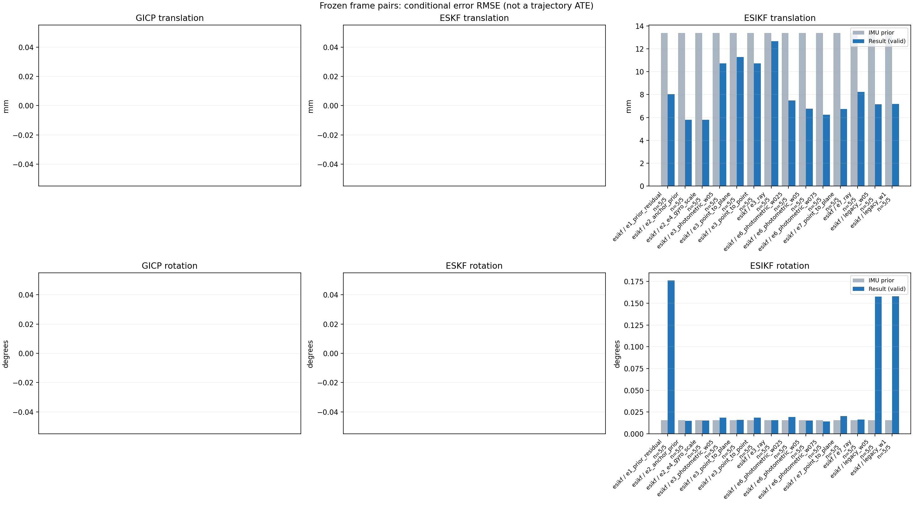

20261015_112757_right · depth=disparity_cache · cache=56159a5bfc8e5a0db30a
模型视差：/home/ubuntu22/slam/SIO_SLAM/models/tensorrt/disp_896x448_fp16.plan；engine SHA256=604cf6ac1f705c877260711730dd5d2d58c2a21f3020c03c668401ef7fb1e768。输入为生产裁剪与光照处理后的 RGB 0..255；此实验使用原始浮点像素视差，不应用完整前端的邻域视差后处理。
原始 ONNX SHA256：e9f49736a65d68d06681add463866b6defdf78fdd7f4f50f6cc941b682fdc0bc。
代价体图改写验证：ONNX Runtime 固定随机特征输入，最大绝对误差 0；该项检查图改写，完整模型精度仍需由录制数据评估。
配准代码版本：744ac2d993ae629b0cc44a3b1d995e04ab4fad48；观测生成版本：744ac2d993ae629b0cc44a3b1d995e04ab4fad48。
固定图像对与纯 IMU 先验；ESKF 回放固定 GICP 观测，ESIKF 直接读取点云。真值只用于此报告。
同时查看 converged 与 solver_status：上游默认 Stereo 在 max_iter / stopped_at_minimum 时也可能置 converged=true。valid 表示输入检查通过，不表示精度提升。欧氏 GICP 未提供独立的点距 RMSE，该列显示 NaN。
误差按每对图像的锚点计算，单位 m / degrees。此处 RMSE 不是全序列 ATE；末帧受同一锚点条件约束。NIS 与条件马氏距离是诊断量，少量相关图像对不能用于宣称协方差已校准。
全部指标 CSV · R / P / K 矩阵 CSV · Stereo 求解逐轮 CSV · ESIKF 逐轮 CSV · 配置快照 · 矢量图
unflagged 排除纯惯性先验平移误差超过 50 mm 的图像对；whitened 为误差按协方差白化后的每自由度均值，协方差与实际误差相符时约为 1。
| stage | method | variant | valid | total | result_translation_rmse_m | result_rotation_rmse_deg | result_translation_median_m | result_rotation_median_deg | result_translation_rmse_unflagged_m | result_rotation_rmse_unflagged_deg | improved_translation | improved_rotation | posterior_whitened_by_P_rot_mean | posterior_whitened_by_P_trans_mean |
|---|---|---|---|---|---|---|---|---|---|---|---|---|---|---|
| esikf | esikf | e1_prior_residual | 5 | 5 | 0.0080487 | 0.17619 | 0.0072854 | 0.16535 | 0.0080487 | 0.17619 | 2 | 0 | 106.29 | 73.882 |
| esikf | esikf | e2_anchor_prior | 5 | 5 | 0.0058081 | 0.015081 | 0.0026698 | 0.013895 | 0.0058081 | 0.015081 | 3 | 2 | 28.708 | 98.279 |
| esikf | esikf | e2_e4_gyro_scale | 5 | 5 | 0.0057936 | 0.015457 | 0.0026954 | 0.013898 | 0.0057936 | 0.015457 | 3 | 1 | 25.813 | 95.674 |
| esikf | esikf | e3_photometric_w05 | 5 | 5 | 0.010718 | 0.018613 | 0.0039307 | 0.0083688 | 0.010718 | 0.018613 | 5 | 2 | 26.579 | 40.838 |
| esikf | esikf | e3_point_to_plane | 5 | 5 | 0.011281 | 0.016163 | 0.0040037 | 0.0091752 | 0.011281 | 0.016163 | 4 | 4 | 26.542 | 36.393 |
| esikf | esikf | e3_point_to_point | 5 | 5 | 0.010713 | 0.01861 | 0.0039306 | 0.0083689 | 0.010713 | 0.01861 | 5 | 2 | 26.579 | 40.843 |
| esikf | esikf | e3_ray | 5 | 5 | 0.012663 | 0.015653 | 0.0040358 | 0.0099477 | 0.012663 | 0.015653 | 3 | 2 | 26.48 | 36.363 |
| esikf | esikf | e6_photometric_w025 | 5 | 5 | 0.0074855 | 0.019204 | 0.003223 | 0.007102 | 0.0074855 | 0.019204 | 3 | 2 | 26.008 | 69.012 |
| esikf | esikf | e6_photometric_w05 | 5 | 5 | 0.0067769 | 0.015297 | 0.0028248 | 0.0076131 | 0.0067769 | 0.015297 | 3 | 3 | 25.284 | 85.301 |
| esikf | esikf | e6_photometric_w075 | 5 | 5 | 0.0062527 | 0.014211 | 0.0024795 | 0.010687 | 0.0062527 | 0.014211 | 3 | 3 | 25.236 | 93.053 |
| esikf | esikf | e7_point_to_plane | 5 | 5 | 0.0067348 | 0.02044 | 0.0035463 | 0.018699 | 0.0067348 | 0.02044 | 3 | 1 | 28.117 | 32.56 |
| esikf | esikf | e7_ray | 5 | 5 | 0.0082298 | 0.016605 | 0.0054102 | 0.015181 | 0.0082298 | 0.016605 | 2 | 1 | 26.778 | 38.335 |
| esikf | esikf | legacy_w05 | 5 | 5 | 0.0071664 | 0.15782 | 0.0058186 | 0.12085 | 0.0071664 | 0.15782 | 2 | 0 | 46.626 | 29.716 |
| esikf | esikf | legacy_w1 | 5 | 5 | 0.0071744 | 0.15798 | 0.0058174 | 0.12102 | 0.0071744 | 0.15798 | 2 | 0 | 93.387 | 59.558 |

| stage | case | method | variant | status | solver_status | inliers | converged | covariance_convention | covariance_from_hessian | fitness | registration_rmse_m | prior_trans_error_m | result_trans_error_m | prior_rot_error_deg | result_rot_error_deg | prior_flagged | R_rot_trace_rad2 | R_pos_trace_m2 | nis_regularized | posterior_whitened_by_P_rot | posterior_whitened_by_P_trans |
|---|---|---|---|---|---|---|---|---|---|---|---|---|---|---|---|---|---|---|---|---|---|
| esikf | static_start | esikf | legacy_w1 | updated | converged | 15559 | 1 | 1 | 0 | 0 | 8.5313e-05 | 0.0013023 | 0.00090396 | 0.044194 | 0 | 1.3653e-07 | 9.4628e-07 | nan | 4.2894 | 1.8131 | |
| esikf | static_start | esikf | legacy_w05 | updated | converged | 15559 | 1 | 1 | 0 | 0 | 8.5313e-05 | 0.0013013 | 0.00090396 | 0.044202 | 0 | 2.7294e-07 | 1.8917e-06 | nan | 2.1451 | 0.9057 | |
| esikf | static_start | esikf | e1_prior_residual | updated_not_converged | max_iterations | 15533 | 0 | 1 | 0 | 0 | 8.5313e-05 | 0.0021619 | 0.00090396 | 0.053326 | 0 | 1.3734e-07 | 9.5686e-07 | nan | 6.0776 | 4.5685 | |
| esikf | static_start | esikf | e2_anchor_prior | updated | converged | 15559 | 1 | 1 | 0 | 0 | 8.5313e-05 | 0.00045666 | 0.00090396 | 0.011558 | 0 | 1.3695e-07 | 9.5352e-07 | nan | 2.0914 | 1.6427 | |
| esikf | static_start | esikf | e2_e4_gyro_scale | updated | converged | 15559 | 1 | 1 | 0 | 0 | 8.5313e-05 | 0.00045666 | 0.00090396 | 0.011558 | 0 | 1.3695e-07 | 9.5352e-07 | nan | 2.0914 | 1.6427 | |
| esikf | static_start | esikf | e6_photometric_w075 | updated | converged | 15559 | 1 | 1 | 0 | 0 | 8.5313e-05 | 0.00038264 | 0.00090396 | 0.009646 | 0 | 1.8256e-07 | 1.2708e-06 | nan | 1.3329 | 1.0561 | |
| esikf | static_start | esikf | e6_photometric_w05 | updated | converged | 15559 | 1 | 1 | 0 | 0 | 8.5313e-05 | 0.00029064 | 0.00090396 | 0.0072789 | 0 | 2.7377e-07 | 1.9058e-06 | nan | 0.68344 | 0.55128 | |
| esikf | static_start | esikf | e6_photometric_w025 | updated | converged | 15559 | 1 | 1 | 0 | 0 | 8.5313e-05 | 0.00017454 | 0.00090396 | 0.004214 | 0 | 5.4704e-07 | 3.8073e-06 | nan | 0.20153 | 0.18286 | |
| esikf | static_start | esikf | e7_ray | updated | converged | 15559 | 1 | 1 | 0 | 0 | 8.5313e-05 | 0.0004059 | 0.00090396 | 0.0063133 | 0 | 0.012949 | 1.4752e-05 | nan | 0.39427 | 1.0039 | |
| esikf | static_start | esikf | e7_point_to_plane | updated | converged | 15559 | 1 | 1 | 0 | 0 | 8.5313e-05 | 0.00026984 | 0.00090396 | 0.005484 | 0 | 8.514e-07 | 3.6474e-06 | nan | 0.30713 | 0.43853 | |
| esikf | static_start | esikf | e3_point_to_point | updated | converged | 15559 | 1 | 1 | 0 | 0 | 8.5313e-05 | 8.3489e-05 | 0.00090396 | 0.00092494 | 0 | 7.4978e-06 | 5.6392e-05 | nan | 0.0078825 | 0.059057 | |
| esikf | static_start | esikf | e3_photometric_w05 | updated | converged | 15559 | 1 | 1 | 0 | 0 | 8.5313e-05 | 8.3487e-05 | 0.00090396 | 0.000925 | 0 | 7.4932e-06 | 5.6481e-05 | nan | 0.0078836 | 0.059058 | |
| esikf | static_start | esikf | e3_ray | updated | converged | 15559 | 1 | 1 | 0 | 0 | 8.5313e-05 | 8.8029e-05 | 0.00090396 | 0.00085711 | 0 | 1.1426 | 0.0012799 | nan | 0.0066546 | 0.064227 | |
| esikf | static_start | esikf | e3_point_to_plane | updated | converged | 15559 | 1 | 1 | 0 | 0 | 8.5313e-05 | 8.7102e-05 | 0.00090396 | 0.00083242 | 0 | 4.1957e-05 | 0.00011001 | nan | 0.0062848 | 0.062115 | |
| esikf | sync_motion | esikf | legacy_w1 | updated | converged | 16463 | 1 | 1 | 0 | 0 | 0.00089766 | 0.0062273 | 0.0098191 | 0.12102 | 0 | 1.2904e-07 | 9.0157e-07 | nan | 21.534 | 45.208 | |
| esikf | sync_motion | esikf | legacy_w05 | updated | converged | 16462 | 1 | 1 | 0 | 0 | 0.00089766 | 0.0062111 | 0.0098191 | 0.12085 | 0 | 2.5793e-07 | 1.8018e-06 | nan | 10.747 | 22.522 | |
| esikf | sync_motion | esikf | e1_prior_residual | updated_not_converged | max_iterations | 16496 | 0 | 1 | 0 | 0 | 0.00089766 | 0.0072854 | 0.0098191 | 0.13877 | 0 | 1.2811e-07 | 8.8721e-07 | nan | 29.034 | 61.289 | |
| esikf | sync_motion | esikf | e2_anchor_prior | updated | converged | 16420 | 1 | 1 | 0 | 0 | 0.00089766 | 0.0026698 | 0.0098191 | 0.0089275 | 0 | 1.3021e-07 | 9.2196e-07 | nan | 14.265 | 17.54 | |
| esikf | sync_motion | esikf | e2_e4_gyro_scale | updated | converged | 16454 | 1 | 1 | 0 | 0 | 0.00089766 | 0.0026954 | 0.0098191 | 0.011013 | 0 | 1.2979e-07 | 9.1501e-07 | nan | 1.0699 | 10.661 | |
| esikf | sync_motion | esikf | e6_photometric_w075 | updated | converged | 16447 | 1 | 1 | 0 | 0 | 0.00089766 | 0.0024795 | 0.0098191 | 0.0084009 | 0 | 1.7292e-07 | 1.2174e-06 | nan | 0.77493 | 6.9402 | |
| esikf | sync_motion | esikf | e6_photometric_w05 | updated | converged | 16439 | 1 | 1 | 0 | 0 | 0.00089766 | 0.0020457 | 0.0098191 | 0.0063291 | 0 | 2.5887e-07 | 1.817e-06 | nan | 0.44759 | 3.4197 | |
| esikf | sync_motion | esikf | e6_photometric_w025 | updated | converged | 16432 | 1 | 1 | 0 | 0 | 0.00089766 | 0.0013873 | 0.0098191 | 0.007102 | 0 | 5.1786e-07 | 3.6435e-06 | nan | 0.32546 | 0.94852 | |
| esikf | sync_motion | esikf | e7_ray | updated | converged | 16424 | 1 | 1 | 0 | 0 | 0.00089766 | 0.0054102 | 0.0098191 | 0.015181 | 0 | 0.0096176 | 1.1595e-05 | nan | 0.67372 | 24.872 | |
| esikf | sync_motion | esikf | e7_point_to_plane | updated | converged | 16490 | 1 | 1 | 0 | 0 | 0.00089766 | 0.0011348 | 0.0098191 | 0.02653 | 0 | 8.8374e-07 | 3.6125e-06 | nan | 2.6119 | 0.85718 | |
| esikf | sync_motion | esikf | e3_point_to_point | updated | converged | 16435 | 1 | 1 | 0 | 0 | 0.00089766 | 0.00086556 | 0.0098191 | 0.0083689 | 0 | 7.0891e-06 | 5.3723e-05 | nan | 0.19506 | 0.31853 | |
| esikf | sync_motion | esikf | e3_photometric_w05 | updated | converged | 16435 | 1 | 1 | 0 | 0 | 0.00089766 | 0.00086597 | 0.0098191 | 0.0083688 | 0 | 7.0839e-06 | 5.3804e-05 | nan | 0.1951 | 0.31878 | |
| esikf | sync_motion | esikf | e3_ray | updated | converged | 16428 | 1 | 1 | 0 | 0 | 0.00089766 | 0.00086331 | 0.0098191 | 0.0099477 | 0 | 0.81541 | 0.0011092 | nan | 0.26659 | 0.3331 | |
| esikf | sync_motion | esikf | e3_point_to_plane | updated | converged | 16435 | 1 | 1 | 0 | 0 | 0.00089766 | 0.00085857 | 0.0098191 | 0.0091752 | 0 | 4.3869e-05 | 0.00011024 | nan | 0.22604 | 0.30946 | |
| esikf | main_motion | esikf | legacy_w1 | updated | converged | 20184 | 1 | 1 | 0 | 0 | 0.0040306 | 0.0046112 | 0.019163 | 0.06159 | 0 | 9.3172e-08 | 9.5879e-07 | nan | 6.5396 | 20.165 | |
| esikf | main_motion | esikf | legacy_w05 | updated | converged | 20184 | 1 | 1 | 0 | 0 | 0.0040306 | 0.0046196 | 0.019163 | 0.061968 | 0 | 1.8624e-07 | 1.9166e-06 | nan | 3.3135 | 10.124 | |
| esikf | main_motion | esikf | e1_prior_residual | updated_not_converged | max_iterations | 20100 | 0 | 1 | 0 | 0 | 0.0040306 | 0.0076103 | 0.019163 | 0.16535 | 0 | 9.3414e-08 | 9.6352e-07 | nan | 51.015 | 56.287 | |
| esikf | main_motion | esikf | e2_anchor_prior | updated_not_converged | max_iterations | 20150 | 0 | 1 | 0 | 0 | 0.0040306 | 0.0021607 | 0.019163 | 0.019925 | 0 | 9.358e-08 | 9.6967e-07 | nan | 101.93 | 9.698 | |
| esikf | main_motion | esikf | e2_e4_gyro_scale | updated_not_converged | max_iterations | 20150 | 0 | 1 | 0 | 0 | 0.0040306 | 0.0021607 | 0.019163 | 0.019922 | 0 | 9.358e-08 | 9.6967e-07 | nan | 101.27 | 9.6985 | |
| esikf | main_motion | esikf | e6_photometric_w075 | updated_not_converged | max_iterations | 20154 | 0 | 1 | 0 | 0 | 0.0040306 | 0.0024068 | 0.019163 | 0.019082 | 0 | 1.2479e-07 | 1.2936e-06 | nan | 101.76 | 11.197 | |
| esikf | main_motion | esikf | e6_photometric_w05 | updated | converged | 20181 | 1 | 1 | 0 | 0 | 0.0040306 | 0.0028248 | 0.019163 | 0.018381 | 0 | 1.8614e-07 | 1.9158e-06 | nan | 102.14 | 13.624 | |
| esikf | main_motion | esikf | e6_photometric_w025 | updated | converged | 20204 | 1 | 1 | 0 | 0 | 0.0040306 | 0.003223 | 0.019163 | 0.018596 | 0 | 3.703e-07 | 3.7903e-06 | nan | 102.86 | 13.783 | |
| esikf | main_motion | esikf | e7_ray | updated | converged | 20229 | 1 | 1 | 0 | 0 | 0.0040306 | 0.0043348 | 0.019163 | 0.019274 | 0 | 0.0073542 | 1.9352e-05 | nan | 101.03 | 19.44 | |
| esikf | main_motion | esikf | e7_point_to_plane | updated | converged | 20212 | 1 | 1 | 0 | 0 | 0.0040306 | 0.0035463 | 0.019163 | 0.018699 | 0 | 7.5393e-07 | 4.0165e-06 | nan | 101.29 | 14.925 | |
| esikf | main_motion | esikf | e3_point_to_point | updated | converged | 20249 | 1 | 1 | 0 | 0 | 0.0040306 | 0.0039306 | 0.019163 | 0.019127 | 0 | 5.0082e-06 | 5.4501e-05 | nan | 101.62 | 12.061 | |
| esikf | main_motion | esikf | e3_photometric_w05 | updated | converged | 20249 | 1 | 1 | 0 | 0 | 0.0040306 | 0.0039307 | 0.019163 | 0.019126 | 0 | 5.0043e-06 | 5.4583e-05 | nan | 101.62 | 12.06 | |
| esikf | main_motion | esikf | e3_ray | updated | converged | 20263 | 1 | 1 | 0 | 0 | 0.0040306 | 0.0040358 | 0.019163 | 0.019165 | 0 | 0.65007 | 0.001663 | nan | 101.23 | 11.837 | |
| esikf | main_motion | esikf | e3_point_to_plane | updated | converged | 20263 | 1 | 1 | 0 | 0 | 0.0040306 | 0.0040037 | 0.019163 | 0.019153 | 0 | 3.6739e-05 | 0.0001172 | nan | 101.26 | 11.872 | |
| esikf | main_motion_long | esikf | legacy_w1 | updated_not_converged | max_iterations | 17029 | 0 | 1 | 0 | 0 | 0.02491 | 0.012719 | 0.02698 | 0.26462 | 0 | 1.2527e-07 | 1.0335e-06 | nan | 316.27 | 187.17 | |
| esikf | main_motion_long | esikf | legacy_w05 | updated_not_converged | max_iterations | 17029 | 0 | 1 | 0 | 0 | 0.02491 | 0.012701 | 0.02698 | 0.26428 | 0 | 2.5048e-07 | 2.0671e-06 | nan | 157.84 | 93.291 | |
| esikf | main_motion_long | esikf | e1_prior_residual | updated_not_converged | max_iterations | 17027 | 0 | 1 | 0 | 0 | 0.02491 | 0.012736 | 0.02698 | 0.26435 | 0 | 1.2528e-07 | 1.0336e-06 | nan | 316.51 | 187.58 | |
| esikf | main_motion_long | esikf | e2_anchor_prior | updated_not_converged | max_iterations | 17188 | 0 | 1 | 0 | 0 | 0.02491 | 0.0066139 | 0.02698 | 0.01827 | 0 | 1.2118e-07 | 9.7288e-07 | nan | 14.472 | 114.87 | |
| esikf | main_motion_long | esikf | e2_e4_gyro_scale | updated_not_converged | max_iterations | 17185 | 0 | 1 | 0 | 0 | 0.02491 | 0.0065395 | 0.02698 | 0.018701 | 0 | 1.2125e-07 | 9.7357e-07 | nan | 13.883 | 108.75 | |
| esikf | main_motion_long | esikf | e6_photometric_w075 | updated_not_converged | max_iterations | 17197 | 0 | 1 | 0 | 0 | 0.02491 | 0.0072532 | 0.02698 | 0.019179 | 0 | 1.6142e-07 | 1.2973e-06 | nan | 12.731 | 109.89 | |
| esikf | main_motion_long | esikf | e6_photometric_w05 | updated_not_converged | max_iterations | 17189 | 0 | 1 | 0 | 0 | 0.02491 | 0.0078003 | 0.02698 | 0.026097 | 0 | 2.4235e-07 | 1.9504e-06 | nan | 14.643 | 92.339 | |
| esikf | main_motion_long | esikf | e6_photometric_w025 | updated_not_converged | max_iterations | 17210 | 0 | 1 | 0 | 0 | 0.02491 | 0.0088382 | 0.02698 | 0.037418 | 0 | 4.8281e-07 | 3.8835e-06 | nan | 19.304 | 65.167 | |
| esikf | main_motion_long | esikf | e7_ray | updated_not_converged | max_iterations | 17148 | 0 | 1 | 0 | 0 | 0.02491 | 0.014147 | 0.02698 | 0.026683 | 0 | 0.0046151 | 6.1391e-05 | nan | 25.592 | 51.309 | |
| esikf | main_motion_long | esikf | e7_point_to_plane | updated | converged | 17140 | 1 | 1 | 0 | 0 | 0.02491 | 0.0096067 | 0.02698 | 0.031101 | 0 | 8.9795e-07 | 4.0958e-06 | nan | 29.286 | 27.046 | |
| esikf | main_motion_long | esikf | e3_point_to_point | updated_not_converged | max_iterations | 17257 | 0 | 1 | 0 | 0 | 0.02491 | 0.017474 | 0.02698 | 0.035697 | 0 | 6.6446e-06 | 5.8034e-05 | nan | 25.37 | 21.38 | |
| esikf | main_motion_long | esikf | e3_photometric_w05 | updated_not_converged | max_iterations | 17254 | 0 | 1 | 0 | 0 | 0.02491 | 0.017486 | 0.02698 | 0.035704 | 0 | 6.6428e-06 | 5.817e-05 | nan | 25.371 | 21.375 | |
| esikf | main_motion_long | esikf | e3_ray | updated | converged | 17231 | 1 | 1 | 0 | 0 | 0.02491 | 0.023011 | 0.02698 | 0.027165 | 0 | 0.37749 | 0.0046673 | nan | 25.355 | 11.548 | |
| esikf | main_motion_long | esikf | e3_point_to_plane | updated | converged | 17234 | 1 | 1 | 0 | 0 | 0.02491 | 0.019209 | 0.02698 | 0.028892 | 0 | 4.3877e-05 | 0.00011785 | nan | 25.632 | 12.625 | |
| esikf | static_end | esikf | legacy_w1 | updated | converged | 19802 | 1 | 1 | 0 | 0 | 0.0161 | 0.0058174 | 0.0045092 | 0.18541 | 0 | 7.1464e-08 | 9.4257e-07 | nan | 118.3 | 43.438 | |
| esikf | static_end | esikf | legacy_w05 | updated | converged | 19803 | 1 | 1 | 0 | 0 | 0.0161 | 0.0058186 | 0.0045092 | 0.18519 | 0 | 1.4286e-07 | 1.8841e-06 | nan | 59.085 | 21.739 | |
| esikf | static_end | esikf | e1_prior_residual | updated_not_converged | max_iterations | 19822 | 0 | 1 | 0 | 0 | 0.0161 | 0.006784 | 0.0045092 | 0.18943 | 0 | 7.1172e-08 | 9.3194e-07 | nan | 128.82 | 59.681 | |
| esikf | static_end | esikf | e2_anchor_prior | updated | converged | 19938 | 1 | 1 | 0 | 0 | 0.0161 | 0.010627 | 0.0045092 | 0.013895 | 0 | 7.0008e-08 | 9.1033e-07 | nan | 10.786 | 347.64 | |
| esikf | static_end | esikf | e2_e4_gyro_scale | updated | converged | 19938 | 1 | 1 | 0 | 0 | 0.0161 | 0.010626 | 0.0045092 | 0.013898 | 0 | 7.0008e-08 | 9.1033e-07 | nan | 10.758 | 347.62 | |
| esikf | static_end | esikf | e6_photometric_w075 | updated | converged | 19932 | 1 | 1 | 0 | 0 | 0.0161 | 0.011436 | 0.0045092 | 0.010687 | 0 | 9.3326e-08 | 1.2142e-06 | nan | 9.5804 | 336.18 | |
| esikf | static_end | esikf | e6_photometric_w05 | updated | converged | 19928 | 1 | 1 | 0 | 0 | 0.0161 | 0.012512 | 0.0045092 | 0.0076131 | 0 | 1.4046e-07 | 1.8348e-06 | nan | 8.5097 | 316.57 | |
| esikf | static_end | esikf | e6_photometric_w025 | updated | converged | 19956 | 1 | 1 | 0 | 0 | 0.0161 | 0.013774 | 0.0045092 | 0.0054568 | 0 | 2.7984e-07 | 3.6395e-06 | nan | 7.3506 | 264.98 | |
| esikf | static_end | esikf | e7_ray | updated | converged | 19901 | 1 | 1 | 0 | 0 | 0.0161 | 0.0095015 | 0.0045092 | 0.0049816 | 0 | 0.017377 | 1.7018e-05 | nan | 6.1973 | 95.053 | |
| esikf | static_end | esikf | e7_point_to_plane | updated | converged | 19886 | 1 | 1 | 0 | 0 | 0.0161 | 0.01098 | 0.0045092 | 0.0061762 | 0 | 7.2458e-07 | 4.6059e-06 | nan | 7.0912 | 119.53 | |
| esikf | static_end | esikf | e3_point_to_point | updated | converged | 20027 | 1 | 1 | 0 | 0 | 0.0161 | 0.015886 | 0.0045092 | 0.0045462 | 0 | 3.7954e-06 | 5.2683e-05 | nan | 5.7048 | 170.39 | |
| esikf | static_end | esikf | e3_photometric_w05 | updated | converged | 20027 | 1 | 1 | 0 | 0 | 0.0161 | 0.015886 | 0.0045092 | 0.0045465 | 0 | 3.7932e-06 | 5.2766e-05 | nan | 5.7048 | 170.38 | |
| esikf | static_end | esikf | e3_ray | updated | converged | 20035 | 1 | 1 | 0 | 0 | 0.0161 | 0.015977 | 0.0045092 | 0.0044907 | 0 | 1.2053 | 0.0012373 | nan | 5.544 | 158.03 | |
| esikf | static_end | esikf | e3_point_to_plane | updated | converged | 20030 | 1 | 1 | 0 | 0 | 0.0161 | 0.015829 | 0.0045092 | 0.0044531 | 0 | 3.459e-05 | 0.00013032 | nan | 5.5855 | 157.09 |